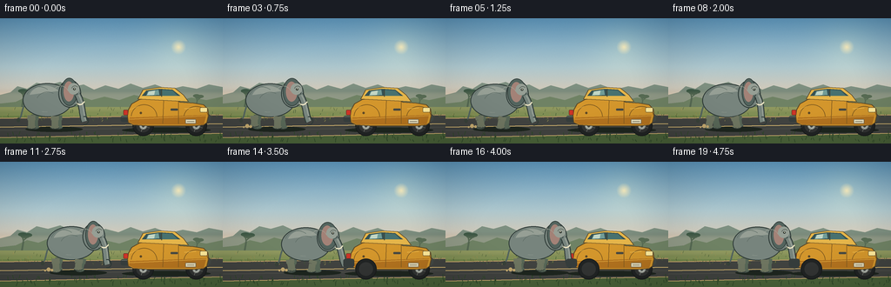
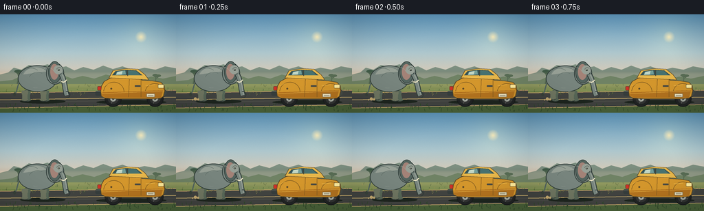
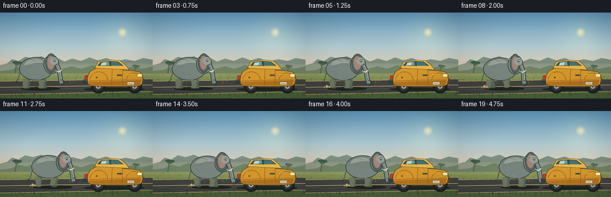
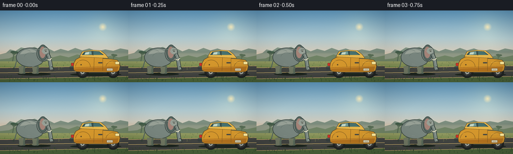
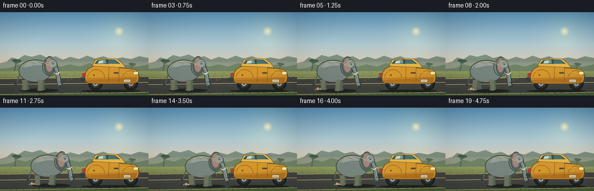
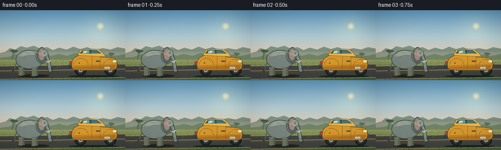
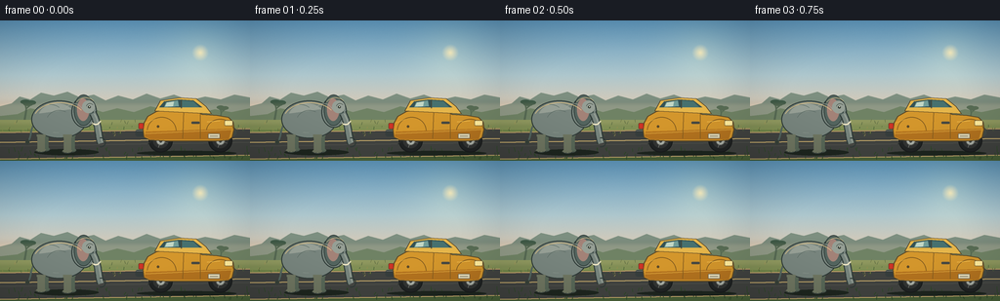

CODING AGENTS AS PIXEL WORLD MODELS
traex/DeepSeek-V4.1-Flash · dynamic_spatial_relationship_0063
点击播放 · 原生 RGB 像素
逐轮保存的候选
回放视频、检查图与代码变化。
每份候选均可单独播放。实际图片检查记录在下方工具轨迹中。
候选 01播放与检查图
点击播放 · 原生 RGB 像素


展开代码变化
--- 上一保存版本
+++ 本次保存版本
@@ -0,0 +1,416 @@
+from __future__ import annotations
+
+import math
+from pathlib import Path
+
+import numpy as np
+from PIL import Image, ImageDraw, ImageFilter
+
+import artifact_io
+
+
+WIDTH = 256
+HEIGHT = 144
+FRAMES = 20
+SCALE = 4
+SS = SCALE
+
+
+def sc(value):
+ return int(round(value * SS))
+
+
+def box(x0, y0, x1, y1):
+ return (sc(x0), sc(y0), sc(x1), sc(y1))
+
+
+def point(x, y):
+ return (sc(x), sc(y))
+
+
+def points(values):
+ return [point(x, y) for x, y in values]
+
+
+def rgba(color, alpha=255):
+ if len(color) == 4:
+ return color
+ return (*color, alpha)
+
+
+def smoothstep(value):
+ value = max(0.0, min(1.0, value))
+ return value * value * (3.0 - 2.0 * value)
+
+
+def lerp(a, b, amount):
+ return a + (b - a) * amount
+
+
+def mix(c1, c2, amount):
+ return tuple(int(round(lerp(a, b, amount))) for a, b in zip(c1, c2))
+
+
+def draw_curve(draw, xy, fill, width, steps=32):
+ arr = np.asarray(xy, dtype=float)
+ t = np.linspace(0.0, 1.0, steps)
+ omt = 1.0 - t
+ curve = (
+ omt[:, None] ** 3 * arr[0]
+ + 3 * omt[:, None] ** 2 * t[:, None] * arr[1]
+ + 3 * omt[:, None] * t[:, None] ** 2 * arr[2]
+ + t[:, None] ** 3 * arr[3]
+ )
+ draw.line([(sc(x), sc(y)) for x, y in curve], fill=fill, width=sc(width), joint="curve")
+ return curve
+
+
+def make_background():
+ width = WIDTH * SS
+ height = HEIGHT * SS
+ y = np.linspace(0.0, 1.0, height, dtype=np.float32)[:, None]
+ horizon_t = np.clip(y / 0.78, 0.0, 1.0)
+
+ top = np.array([94, 150, 187], dtype=np.float32)
+ middle = np.array([174, 199, 205], dtype=np.float32)
+ horizon = np.array([250, 206, 165], dtype=np.float32)
+ sky = np.empty((height, width, 3), dtype=np.float32)
+ low = np.clip(horizon_t * 2.0, 0.0, 1.0)
+ high = np.clip((horizon_t - 0.5) * 2.0, 0.0, 1.0)
+ for c in range(3):
+ sky[:, :, c] = (
+ top[c] * (1.0 - low)
+ + middle[c] * low * (1.0 - high)
+ + horizon[c] * high
+ )
+
+ # Warm sun and its soft atmospheric bloom.
+ yy, xx = np.mgrid[0:height, 0:width]
+ sun_x, sun_y = 205 * SS, 33 * SS
+ dist = np.sqrt((xx - sun_x) ** 2 + (yy - sun_y) ** 2)
+ glow = np.clip(1.0 - dist / (78 * SS), 0.0, 1.0) ** 2.2
+ sky += glow[:, :, None] * np.array([24, 19, 6], dtype=np.float32)
+ sun = np.clip(1.0 - dist / (8.8 * SS), 0.0, 1.0)
+ sky = sky * (1.0 - sun[:, :, None] * 0.90) + np.array([255, 239, 188]) * sun[:, :, None] * 0.90
+
+ # Faint, deterministic film grain keeps the broad sky from looking flat.
+ rng = np.random.default_rng(63)
+ grain = rng.normal(0.0, 1.25, (height, width, 1)).astype(np.float32)
+ sky += grain
+ image = Image.fromarray(np.uint8(np.clip(sky, 0, 255)), "RGB").convert("RGBA")
+ draw = ImageDraw.Draw(image, "RGBA")
+
+ # Layered, hazy escarpments.
+ far = [
+ (0, 88), (12, 85), (20, 78), (31, 81), (42, 74), (55, 77),
+ (69, 73), (82, 79), (96, 76), (108, 82), (121, 77), (136, 81),
+ (150, 75), (164, 80), (178, 76), (194, 82), (210, 78), (226, 81),
+ (240, 76), (256, 79), (256, 112), (0, 112),
+ ]
+ draw.polygon(points(far), fill=(125, 143, 128, 185))
+ near_hills = [
+ (0, 98), (18, 96), (31, 90), (44, 93), (59, 87), (75, 91),
+ (91, 89), (105, 94), (120, 90), (137, 94), (154, 88), (171, 92),
+ (187, 89), (204, 95), (220, 91), (237, 94), (256, 90),
+ (256, 116), (0, 116),
+ ]
+ draw.polygon(points(near_hills), fill=(91, 119, 91, 225))
+
+ # Acacia silhouettes establish the savanna without competing with the action.
+ def acacia(x, y, size, color):
+ trunk_w = max(1, size * 0.10)
+ draw.line([point(x, y), point(x + size * 0.10, y - size * 0.55)], fill=color, width=sc(trunk_w))
+ draw.line(
+ [point(x + size * 0.10, y - size * 0.55), point(x + size * 0.02, y - size * 0.90)],
+ fill=color,
+ width=sc(trunk_w * 0.75),
+ )
+ draw.line(
+ [point(x + size * 0.08, y - size * 0.60), point(x + size * 0.34, y - size * 0.82)],
+ fill=color,
+ width=sc(trunk_w * 0.70),
+ )
+ draw.ellipse(box(x - size * 0.20, y - size * 1.04, x + size * 0.30, y - size * 0.82), fill=color)
+ draw.ellipse(box(x + size * 0.12, y - size * 1.00, x + size * 0.56, y - size * 0.78), fill=color)
+ draw.ellipse(box(x - size * 0.06, y - size * 0.93, x + size * 0.42, y - size * 0.73), fill=color)
+
+ acacia(25, 103, 21, (61, 89, 70, 225))
+ acacia(225, 104, 16, (62, 92, 71, 205))
+ acacia(89, 102, 10, (72, 99, 76, 175))
+
+ # Grass plain with broad tonal bands.
+ for y0, y1, color in [
+ (102, 113, (130, 145, 86)),
+ (112, 121, (113, 133, 74)),
+ (120, 132, (94, 116, 66)),
+ (131, 145, (74, 98, 57)),
+ ]:
+ draw.rectangle(box(0, y0, WIDTH, y1), fill=(*color, 255))
+
+ # Road and warm edge strips.
+ draw.polygon(points([(0, 115), (256, 111), (256, 132), (0, 137)]), fill=(65, 67, 64, 255))
+ draw.line([point(0, 115), point(256, 111)], fill=(190, 158, 105, 255), width=sc(1.2))
+ draw.line([point(0, 137), point(256, 132)], fill=(215, 180, 115, 255), width=sc(1.0))
+ draw.line([point(0, 125), point(256, 121)], fill=(228, 194, 118, 235), width=sc(1.1))
+ draw.line([point(0, 129), point(256, 125)], fill=(84, 85, 78, 150), width=sc(0.7))
+
+ # Sparse grass blades along both verges.
+ rng = np.random.default_rng(19)
+ for _ in range(130):
+ x = rng.uniform(0, WIDTH)
+ y = rng.uniform(104, 119)
+ length = rng.uniform(1.2, 3.3)
+ lean = rng.uniform(-1.2, 1.2)
+ color = rng.choice([(61, 86, 51), (85, 104, 57), (153, 144, 79)])
+ draw.line([point(x, y), point(x + lean, y - length)], fill=(*color, 200), width=sc(0.45))
+ for _ in range(80):
+ x = rng.uniform(0, WIDTH)
+ y = rng.uniform(133, 143)
+ length = rng.uniform(2.0, 5.0)
+ lean = rng.uniform(-1.8, 1.8)
+ draw.line([point(x, y), point(x + lean, y - length)], fill=(48, 72, 42, 230), width=sc(0.65))
+
+ # Soft distant heat haze at the horizon.
+ haze = Image.new("RGBA", image.size, (0, 0, 0, 0))
+ hdraw = ImageDraw.Draw(haze, "RGBA")
+ hdraw.rectangle(box(0, 84, 256, 108), fill=(244, 203, 162, 30))
+ haze = haze.filter(ImageFilter.GaussianBlur(sc(2.2)))
+ image = Image.alpha_composite(image, haze)
+ return image
+
+
+def draw_shadow(draw, cx, cy, rx, ry, alpha=90):
+ draw.ellipse(box(cx - rx, cy - ry, cx + rx, cy + ry), fill=(30, 38, 31, alpha))
+
+
+def draw_car(draw):
+ ground = 126.5
+
+ # Ground contact and tire shadows.
+ draw_shadow(draw, 191, ground + 2.0, 51, 3.0, 115)
+
+ # Rear wheel, front wheel, and hubs.
+ for cx in (164.5, 225.5):
+ draw.ellipse(box(cx - 12.3, 111.2, cx + 12.3, 135.2), fill=(33, 36, 36, 255), outline=(25, 28, 28, 255), width=sc(1.0))
+ draw.ellipse(box(cx - 8.0, 115.5, cx + 8.0, 131.0), fill=(50, 52, 51, 255))
+ draw.ellipse(box(cx - 4.8, 118.2, cx + 4.8, 128.0), fill=(173, 178, 169, 255), outline=(92, 94, 89, 255), width=sc(0.7))
+ draw.ellipse(box(cx - 1.7, 121.1, cx + 1.7, 125.3), fill=(66, 68, 64, 255))
+ for angle in (0.35, 1.92, 3.49, 5.06):
+ x1 = cx + math.cos(angle) * 2.7
+ y1 = 123.2 + math.sin(angle) * 2.7
+ x2 = cx + math.cos(angle) * 7.4
+ y2 = 123.2 + math.sin(angle) * 7.4
+ draw.line([point(x1, y1), point(x2, y2)], fill=(137, 141, 133, 210), width=sc(0.55))
+
+ # Bumpers sit behind the body shell.
+ draw.rounded_rectangle(box(138.5, 112.0, 148.5, 119.0), radius=sc(2.5), fill=(54, 61, 60, 255))
+ draw.rounded_rectangle(box(236.0, 110.5, 242.0, 118.0), radius=sc(2.0), fill=(68, 74, 70, 255))
+ draw.line([point(139.5, 113.0), point(146.5, 113.0)], fill=(132, 136, 128, 220), width=sc(0.6))
+
+ body = [
+ (146, 112), (147, 105), (151, 98), (160, 93), (173, 91),
+ (188, 89), (198, 91), (207, 96), (222, 97), (234, 99),
+ (239, 104), (240, 111), (238, 120), (234, 123), (222, 124),
+ (173, 124), (153, 123), (147, 120),
+ ]
+ draw.polygon(points(body), fill=(211, 150, 44, 255), outline=(91, 71, 37, 255), width=sc(0.9))
+
+ # Lower body shade and door seams.
+ draw.polygon(
+ points([(149, 114), (237, 111), (234, 122), (154, 122), (148, 119)]),
+ fill=(179, 115, 31, 235),
+ )
+ draw.line([point(149, 116), point(237, 112)], fill=(232, 177, 67, 210), width=sc(0.75))
+ draw.line([point(188, 94), point(187, 121)], fill=(132, 93, 32, 235), width=sc(0.75))
+ draw.line([point(205, 96), point(205, 121)], fill=(132, 93, 32, 210), width=sc(0.65))
+
+ # Roof and glasshouse.
+ roof = [(158, 93), (164, 82), (184, 79), (201, 80), (211, 88), (217, 96)]
+ draw.polygon(points(roof), fill=(229, 181, 74, 255), outline=(91, 71, 37, 255), width=sc(0.8))
+ draw.polygon(points([(163, 89), (168, 83), (183, 81), (198, 82), (207, 89)]), fill=(53, 81, 83, 255))
+ draw.polygon(points([(170, 84), (182, 82), (183, 88), (168, 89)]), fill=(113, 156, 151, 210))
+ draw.polygon(points([(186, 82), (198, 83), (204, 89), (186, 89)]), fill=(71, 113, 111, 235))
+ draw.polygon(points([(171, 84), (178, 83), (177, 88), (169, 88)]), fill=(194, 214, 197, 125))
+ draw.line([point(185.5, 81.5), point(185.5, 90)], fill=(64, 70, 58, 255), width=sc(1.0))
+
+ # Fenders, lamps, and brightwork.
+ draw.arc(box(150.5, 99, 180.5, 127.5), 184, 358, fill=(124, 88, 31, 255), width=sc(0.8))
+ draw.arc(box(211.0, 101.0, 239.5, 126.5), 186, 356, fill=(124, 88, 31, 255), width=sc(0.8))
+ draw.rounded_rectangle(box(229.8, 102.5, 238.3, 108.1), radius=sc(1.3), fill=(255, 235, 155, 255), outline=(104, 89, 55, 255), width=sc(0.55))
+ draw.rounded_rectangle(box(141.7, 105.3, 147.0, 111.2), radius=sc(1.0), fill=(204, 52, 38, 255), outline=(92, 43, 35, 255), width=sc(0.5))
+ draw.rounded_rectangle(box(196.0, 103.7, 204.3, 106.1), radius=sc(0.8), fill=(71, 73, 66, 255))
+ draw.ellipse(box(160.5, 107.5, 163.0, 110.0), fill=(92, 72, 38, 255))
+ draw.line([point(212, 104), point(225, 103)], fill=(244, 195, 83, 210), width=sc(0.65))
+ draw.line([point(149, 105), point(159, 101)], fill=(244, 195, 83, 200), width=sc(0.55))
+
+ # License plate, exhaust, and wheel-well shadows.
+ draw.rounded_rectangle(box(213.0, 116.0, 225.0, 121.0), radius=sc(0.8), fill=(230, 220, 184, 255), outline=(93, 88, 74, 255), width=sc(0.45))
+ draw.line([point(215.0, 118.5), point(223.0, 118.5)], fill=(82, 80, 68, 210), width=sc(0.45))
+ draw.line([point(155.5, 123.0), point(151.5, 127.0)], fill=(43, 47, 45, 255), width=sc(1.2))
+
+
+def elephant_leg(draw, hip_x, hip_y, phase, near=True, moving=1.0):
+ base = (111, 118, 97) if near else (88, 103, 87)
+ outline = (48, 58, 55) if near else (59, 71, 66)
+ swing = math.sin(phase) * 3.0 * moving
+ lift = max(0.0, math.cos(phase)) * 2.4 * moving
+ foot_x = hip_x + swing
+ foot_y = 126.5 - lift
+
+ top = hip_y - 1.0
+ knee_x = hip_x + swing * 0.38
+ knee_y = 117.0 - lift * 0.30
+ draw.line([point(hip_x, top), point(knee_x, knee_y)], fill=(*base, 255), width=sc(9.3 if near else 8.7))
+ draw.line([point(knee_x, knee_y), point(foot_x, foot_y - 2.0)], fill=(*base, 255), width=sc(7.8 if near else 7.2))
+ draw.ellipse(box(foot_x - 5.2, foot_y - 3.4, foot_x + 5.0, foot_y + 1.0), fill=(*base, 255))
+ draw.arc(box(foot_x - 5.1, foot_y - 3.4, foot_x + 5.0, foot_y + 1.1), 5, 170, fill=(*outline, 255), width=sc(0.75))
+ draw.line([point(foot_x - 1.5, foot_y - 0.3), point(foot_x - 1.5, foot_y + 0.5)], fill=(57, 68, 63, 180), width=sc(0.45))
+ draw.line([point(foot_x + 1.7, foot_y - 0.3), point(foot_x + 1.7, foot_y + 0.5)], fill=(57, 68, 63, 180), width=sc(0.45))
+
+
+def draw_elephant(draw, x, y, walk_phase, moving, scale=1.0):
+ # x, y identify the animal's contact point. The body is intentionally large
+ # enough to read clearly at the requested 256x144 resolution.
+ bob = math.sin(walk_phase * 2.0) * 0.8 * moving
+ y = y + bob
+ far = (99, 113, 106)
+ base = (119, 132, 125)
+ lit = (150, 159, 149)
+ shade = (83, 100, 94)
+ outline = (45, 57, 54)
+
+ draw_shadow(draw, x + 7, 127.5, 33.0, 3.1, 105)
+
+ # Tail and its tuft.
+ draw_curve(
+ draw,
+ [(x - 25, y - 29), (x - 31, y - 24), (x - 29, y - 13), (x - 34, y - 10)],
+ (*shade, 255),
+ 1.7,
+ )
+ draw.ellipse(box(x - 36, y - 12, x - 32, y - 7), fill=(56, 65, 57, 255))
+
+ # Far legs are darker and offset for a readable walking silhouette.
+ elephant_leg(draw, x - 15, y - 15, walk_phase + math.pi, near=False, moving=moving)
+ elephant_leg(draw, x + 12, y - 14, walk_phase + 2.2, near=False, moving=moving)
+
+ # Main barrel and shoulder.
+ draw.ellipse(box(x - 29, y - 52, x + 28, y - 13), fill=(*base, 255), outline=(*outline, 255), width=sc(1.0))
+ draw.ellipse(box(x - 22, y - 49, x + 16, y - 19), fill=(*lit, 235))
+ draw.polygon(
+ points([
+ (x - 25, y - 38), (x + 12, y - 43), (x + 24, y - 29),
+ (x + 17, y - 18), (x - 18, y - 20),
+ ]),
+ fill=(*base, 205),
+ )
+
+ # Near legs.
+ elephant_leg(draw, x - 19, y - 14, walk_phase, near=True, moving=moving)
+ elephant_leg(draw, x + 8, y - 13, walk_phase + math.pi, near=True, moving=moving)
+
+ # Head and ear. A separate head keeps the face profile legible.
+ head_x = x + 25
+ head_y = y - 40
+ draw.ellipse(box(head_x - 13, head_y - 16, head_x + 13, head_y + 16), fill=(*base, 255), outline=(*outline, 255), width=sc(1.0))
+ ear_flap = math.sin(walk_phase + 0.6) * 1.4 * moving
+ draw.ellipse(box(head_x - 10 - ear_flap, head_y - 18, head_x + 9 + ear_flap, head_y + 14), fill=(*shade, 255), outline=(*outline, 255), width=sc(0.75))
+ draw.ellipse(box(head_x - 7 - ear_flap * 0.5, head_y - 14, head_x + 5 + ear_flap * 0.5, head_y + 9), fill=(163, 130, 119, 220))
+
+ # Forehead highlight and eye.
+ draw.ellipse(box(head_x - 2, head_y - 12, head_x + 11, head_y + 1), fill=(*lit, 220))
+ draw.ellipse(box(head_x + 4.1, head_y - 6.5, head_x + 6.8, head_y - 4.0), fill=(39, 47, 43, 255))
+ draw.ellipse(box(head_x + 5.0, head_y - 6.1, head_x + 6.0, head_y - 5.1), fill=(230, 225, 195, 230))
+ draw.arc(box(head_x + 2, head_y - 9, head_x + 10, head_y - 1), 196, 322, fill=(59, 70, 63, 210), width=sc(0.55))
+
+ # Trunk: a tapered sequence of round strokes following a gentle S-curve.
+ sway = math.sin(walk_phase + 0.9) * 2.4 * moving
+ trunk = [
+ (head_x + 9, head_y + 1),
+ (head_x + 15 + sway * 0.25, head_y + 12),
+ (head_x + 14 + sway * 0.6, head_y + 24),
+ (head_x + 17 + sway, head_y + 32),
+ ]
+ draw_curve(draw, trunk, (*outline, 255), 7.7, 26)
+ draw_curve(draw, trunk, (*base, 255), 5.7, 26)
+ draw_curve(
+ draw,
+ [(head_x + 10.4, head_y + 1.5), (head_x + 16.5 + sway * 0.2, head_y + 12),
+ (head_x + 15.8 + sway * 0.55, head_y + 24), (head_x + 18.5 + sway, head_y + 31)],
+ (*lit, 130),
+ 1.2,
+ 26,
+ )
+ draw.arc(box(head_x + 12 + sway, head_y + 26, head_x + 22 + sway, head_y + 36), 255, 105, fill=(*outline, 240), width=sc(1.0))
+
+ # Tusk and mouth line.
+ draw_curve(
+ draw,
+ [(head_x + 8, head_y + 11), (head_x + 12, head_y + 14), (head_x + 15, head_y + 12), (head_x + 17, head_y + 9)],
+ (238, 229, 195, 255),
+ 1.6,
+ 18,
+ )
+ draw.arc(box(head_x + 2, head_y + 5, head_x + 10, head_y + 13), 8, 105, fill=(67, 75, 66, 220), width=sc(0.55))
+
+ # Sparse skin creases on the shoulder and rear flank.
+ draw.arc(box(x - 25, y - 48, x + 5, y - 21), 200, 310, fill=(87, 104, 96, 125), width=sc(0.45))
+ draw.arc(box(x - 14, y - 42, x + 13, y - 17), 205, 300, fill=(88, 103, 96, 110), width=sc(0.4))
+ draw.arc(box(x + 4, y - 49, x + 25, y - 24), 220, 328, fill=(164, 169, 155, 105), width=sc(0.4))
+
+ # Tiny dust puffs appear only while the feet are moving.
+ if moving > 0.05:
+ dust_alpha = int(24 + 28 * moving)
+ for dx, dy, radius in [(-27, -2.2, 2.2), (-23, -1.5, 1.4), (-31, -1.0, 1.0)]:
+ draw.ellipse(box(x + dx - radius, 126 + dy - radius, x + dx + radius, 126 + dy + radius), fill=(197, 170, 112, dust_alpha))
+
+
+def frame(index):
+ image = make_background()
+ draw = ImageDraw.Draw(image, "RGBA")
+
+ t = index / (FRAMES - 1)
+ motion = smoothstep((t - 0.16) / 0.76)
+ elephant_x = lerp(55.0, 103.0, motion)
+ walk_phase = motion * math.pi * 4.8 + t * math.pi * 0.25
+ moving = 1.0 if 0.10 < t < 0.94 else 0.35 * abs(math.sin(t * math.pi))
+
+ # The car remains parked; the rear is its left end and the front points right.
+ draw_car(draw)
+
+ # Draw the elephant behind the car body once it reaches the rear. This makes
+ # the final spatial relationship read as "at the back of" rather than beside.
+ if elephant_x < 93:
+ draw_elephant(draw, elephant_x, 126.5, walk_phase, moving)
+ else:
+ # Separate rear-half occlusion: the car's rear bumper and wheel sit in
+ # front while the elephant's head and trunk remain visible.
+ draw_elephant(draw, elephant_x, 126.5, walk_phase, moving)
+ overlay = Image.new("RGBA", image.size, (0, 0, 0, 0))
+ odraw = ImageDraw.Draw(overlay, "RGBA")
+ odraw.rounded_rectangle(box(138.5, 111.5, 151.0, 121.0), radius=sc(2.5), fill=(54, 61, 60, 255))
+ odraw.ellipse(box(152.2, 111.2, 176.8, 135.2), fill=(33, 36, 36, 255), outline=(25, 28, 28, 255), width=sc(1.0))
+ odraw.ellipse(box(156.5, 115.5, 172.5, 131.0), fill=(50, 52, 51, 255))
+ image = Image.alpha_composite(image, overlay)
+
+ # Gentle warm vignette and final downsampling provide a coherent film finish.
+ yy, xx = np.mgrid[0:HEIGHT * SS, 0:WIDTH * SS]
+ nx = (xx - WIDTH * SS * 0.5) / (WIDTH * SS * 0.5)
+ ny = (yy - HEIGHT * SS * 0.5) / (HEIGHT * SS * 0.5)
+ vignette = np.clip((nx * nx * 0.50 + ny * ny * 0.72) - 0.24, 0.0, 1.0) * 0.16
+ arr = np.asarray(image.convert("RGB"), dtype=np.float32)
+ arr *= (1.0 - vignette[:, :, None])
+ image = Image.fromarray(np.uint8(np.clip(arr, 0, 255)), "RGB")
+ image = image.resize((WIDTH, HEIGHT), Image.Resampling.LANCZOS)
+ return np.asarray(image, dtype=np.uint8)
+
+
+def main():
+ case_dir = Path(__file__).resolve().parent
+ frames = np.stack([frame(i) for i in range(FRAMES)])
+ artifact_io.save(frames, case_dir)
+ print(f"saved {frames.shape} RGB frames to {case_dir}")
+
+
+if __name__ == "__main__":
+ main()
候选 02播放与检查图
点击播放 · 原生 RGB 像素


展开代码变化
--- 上一保存版本
+++ 本次保存版本
@@ -14,6 +14,8 @@
FRAMES = 20
SCALE = 4
SS = SCALE
+_BACKGROUND = None
+_VIGNETTE = None
def sc(value):
@@ -366,40 +368,31 @@
def frame(index):
- image = make_background()
+ global _BACKGROUND, _VIGNETTE
+ if _BACKGROUND is None:
+ _BACKGROUND = make_background()
+ yy, xx = np.mgrid[0:HEIGHT * SS, 0:WIDTH * SS]
+ nx = (xx - WIDTH * SS * 0.5) / (WIDTH * SS * 0.5)
+ ny = (yy - HEIGHT * SS * 0.5) / (HEIGHT * SS * 0.5)
+ _VIGNETTE = np.clip((nx * nx * 0.50 + ny * ny * 0.72) - 0.24, 0.0, 1.0) * 0.16
+
+ image = _BACKGROUND.copy()
draw = ImageDraw.Draw(image, "RGBA")
t = index / (FRAMES - 1)
motion = smoothstep((t - 0.16) / 0.76)
- elephant_x = lerp(55.0, 103.0, motion)
- walk_phase = motion * math.pi * 4.8 + t * math.pi * 0.25
- moving = 1.0 if 0.10 < t < 0.94 else 0.35 * abs(math.sin(t * math.pi))
-
- # The car remains parked; the rear is its left end and the front points right.
+ elephant_x = lerp(61.0, 97.0, motion)
+ walk_phase = motion * math.pi * 4.8
+ moving = math.sin(math.pi * motion) ** 0.35
+
+ # The elephant approaches from behind the parked car's rear bumper. Drawing
+ # it first gives the final contact point an unambiguous depth relationship.
+ draw_elephant(draw, elephant_x, 126.5, walk_phase, moving)
draw_car(draw)
- # Draw the elephant behind the car body once it reaches the rear. This makes
- # the final spatial relationship read as "at the back of" rather than beside.
- if elephant_x < 93:
- draw_elephant(draw, elephant_x, 126.5, walk_phase, moving)
- else:
- # Separate rear-half occlusion: the car's rear bumper and wheel sit in
- # front while the elephant's head and trunk remain visible.
- draw_elephant(draw, elephant_x, 126.5, walk_phase, moving)
- overlay = Image.new("RGBA", image.size, (0, 0, 0, 0))
- odraw = ImageDraw.Draw(overlay, "RGBA")
- odraw.rounded_rectangle(box(138.5, 111.5, 151.0, 121.0), radius=sc(2.5), fill=(54, 61, 60, 255))
- odraw.ellipse(box(152.2, 111.2, 176.8, 135.2), fill=(33, 36, 36, 255), outline=(25, 28, 28, 255), width=sc(1.0))
- odraw.ellipse(box(156.5, 115.5, 172.5, 131.0), fill=(50, 52, 51, 255))
- image = Image.alpha_composite(image, overlay)
-
# Gentle warm vignette and final downsampling provide a coherent film finish.
- yy, xx = np.mgrid[0:HEIGHT * SS, 0:WIDTH * SS]
- nx = (xx - WIDTH * SS * 0.5) / (WIDTH * SS * 0.5)
- ny = (yy - HEIGHT * SS * 0.5) / (HEIGHT * SS * 0.5)
- vignette = np.clip((nx * nx * 0.50 + ny * ny * 0.72) - 0.24, 0.0, 1.0) * 0.16
arr = np.asarray(image.convert("RGB"), dtype=np.float32)
- arr *= (1.0 - vignette[:, :, None])
+ arr *= (1.0 - _VIGNETTE[:, :, None])
image = Image.fromarray(np.uint8(np.clip(arr, 0, 255)), "RGB")
image = image.resize((WIDTH, HEIGHT), Image.Resampling.LANCZOS)
return np.asarray(image, dtype=np.uint8)
候选 03播放与检查图
点击播放 · 原生 RGB 像素


展开代码变化
--- 上一保存版本
+++ 本次保存版本
@@ -99,7 +99,7 @@
rng = np.random.default_rng(63)
grain = rng.normal(0.0, 1.25, (height, width, 1)).astype(np.float32)
sky += grain
- image = Image.fromarray(np.uint8(np.clip(sky, 0, 255)), "RGB").convert("RGBA")
+ image = Image.fromarray(np.uint8(np.clip(sky, 0, 255))).convert("RGBA")
draw = ImageDraw.Draw(image, "RGBA")
# Layered, hazy escarpments.
@@ -150,9 +150,9 @@
draw.rectangle(box(0, y0, WIDTH, y1), fill=(*color, 255))
# Road and warm edge strips.
- draw.polygon(points([(0, 115), (256, 111), (256, 132), (0, 137)]), fill=(65, 67, 64, 255))
+ draw.polygon(points([(0, 115), (256, 111), (256, 138), (0, 142)]), fill=(65, 67, 64, 255))
draw.line([point(0, 115), point(256, 111)], fill=(190, 158, 105, 255), width=sc(1.2))
- draw.line([point(0, 137), point(256, 132)], fill=(215, 180, 115, 255), width=sc(1.0))
+ draw.line([point(0, 142), point(256, 138)], fill=(215, 180, 115, 255), width=sc(1.0))
draw.line([point(0, 125), point(256, 121)], fill=(228, 194, 118, 235), width=sc(1.1))
draw.line([point(0, 129), point(256, 125)], fill=(84, 85, 78, 150), width=sc(0.7))
@@ -186,10 +186,10 @@
def draw_car(draw):
- ground = 126.5
+ ground = 135.2
# Ground contact and tire shadows.
- draw_shadow(draw, 191, ground + 2.0, 51, 3.0, 115)
+ draw_shadow(draw, 191, ground + 1.0, 51, 2.4, 115)
# Rear wheel, front wheel, and hubs.
for cx in (164.5, 225.5):
@@ -257,7 +257,7 @@
swing = math.sin(phase) * 3.0 * moving
lift = max(0.0, math.cos(phase)) * 2.4 * moving
foot_x = hip_x + swing
- foot_y = 126.5 - lift
+ foot_y = hip_y + 14.5 - lift
top = hip_y - 1.0
knee_x = hip_x + swing * 0.38
@@ -281,7 +281,7 @@
shade = (83, 100, 94)
outline = (45, 57, 54)
- draw_shadow(draw, x + 7, 127.5, 33.0, 3.1, 105)
+ draw_shadow(draw, x + 7, y + 1.2, 33.0, 3.1, 105)
# Tail and its tuft.
draw_curve(
@@ -359,12 +359,14 @@
draw.arc(box(x - 25, y - 48, x + 5, y - 21), 200, 310, fill=(87, 104, 96, 125), width=sc(0.45))
draw.arc(box(x - 14, y - 42, x + 13, y - 17), 205, 300, fill=(88, 103, 96, 110), width=sc(0.4))
draw.arc(box(x + 4, y - 49, x + 25, y - 24), 220, 328, fill=(164, 169, 155, 105), width=sc(0.4))
+ draw.arc(box(x - 27, y - 50, x + 27, y - 14), 202, 326, fill=(220, 191, 133, 100), width=sc(0.65))
+ draw.arc(box(head_x - 10, head_y - 15, head_x + 13, head_y + 8), 218, 315, fill=(231, 204, 145, 120), width=sc(0.55))
# Tiny dust puffs appear only while the feet are moving.
if moving > 0.05:
dust_alpha = int(24 + 28 * moving)
for dx, dy, radius in [(-27, -2.2, 2.2), (-23, -1.5, 1.4), (-31, -1.0, 1.0)]:
- draw.ellipse(box(x + dx - radius, 126 + dy - radius, x + dx + radius, 126 + dy + radius), fill=(197, 170, 112, dust_alpha))
+ draw.ellipse(box(x + dx - radius, y + dy - radius, x + dx + radius, y + dy + radius), fill=(197, 170, 112, dust_alpha))
def frame(index):
@@ -387,13 +389,13 @@
# The elephant approaches from behind the parked car's rear bumper. Drawing
# it first gives the final contact point an unambiguous depth relationship.
- draw_elephant(draw, elephant_x, 126.5, walk_phase, moving)
+ draw_elephant(draw, elephant_x, 134.0, walk_phase, moving)
draw_car(draw)
# Gentle warm vignette and final downsampling provide a coherent film finish.
arr = np.asarray(image.convert("RGB"), dtype=np.float32)
arr *= (1.0 - _VIGNETTE[:, :, None])
- image = Image.fromarray(np.uint8(np.clip(arr, 0, 255)), "RGB")
+ image = Image.fromarray(np.uint8(np.clip(arr, 0, 255)))
image = image.resize((WIDTH, HEIGHT), Image.Resampling.LANCZOS)
return np.asarray(image, dtype=np.uint8)
候选 04播放与检查图
点击播放 · 原生 RGB 像素

展开代码变化
--- 上一保存版本
+++ 本次保存版本
@@ -270,10 +270,10 @@
draw.line([point(foot_x + 1.7, foot_y - 0.3), point(foot_x + 1.7, foot_y + 0.5)], fill=(57, 68, 63, 180), width=sc(0.45))
-def draw_elephant(draw, x, y, walk_phase, moving, scale=1.0):
+def draw_elephant(draw, x, y, walk_phase, moving, idle_phase):
# x, y identify the animal's contact point. The body is intentionally large
# enough to read clearly at the requested 256x144 resolution.
- bob = math.sin(walk_phase * 2.0) * 0.8 * moving
+ bob = math.sin(walk_phase * 2.0) * 0.8 * moving + math.sin(idle_phase) * 0.22
y = y + bob
far = (99, 113, 106)
base = (119, 132, 125)
@@ -284,13 +284,15 @@
draw_shadow(draw, x + 7, y + 1.2, 33.0, 3.1, 105)
# Tail and its tuft.
+ tail_sway = math.sin(idle_phase + 2.2) * 1.3
draw_curve(
draw,
- [(x - 25, y - 29), (x - 31, y - 24), (x - 29, y - 13), (x - 34, y - 10)],
+ [(x - 25, y - 29), (x - 31 + tail_sway * 0.25, y - 24),
+ (x - 29 + tail_sway * 0.65, y - 13), (x - 34 + tail_sway, y - 10)],
(*shade, 255),
1.7,
)
- draw.ellipse(box(x - 36, y - 12, x - 32, y - 7), fill=(56, 65, 57, 255))
+ draw.ellipse(box(x - 36 + tail_sway, y - 12, x - 32 + tail_sway, y - 7), fill=(56, 65, 57, 255))
# Far legs are darker and offset for a readable walking silhouette.
elephant_leg(draw, x - 15, y - 15, walk_phase + math.pi, near=False, moving=moving)
@@ -315,7 +317,7 @@
head_x = x + 25
head_y = y - 40
draw.ellipse(box(head_x - 13, head_y - 16, head_x + 13, head_y + 16), fill=(*base, 255), outline=(*outline, 255), width=sc(1.0))
- ear_flap = math.sin(walk_phase + 0.6) * 1.4 * moving
+ ear_flap = math.sin(walk_phase + 0.6) * 1.4 * moving + math.sin(idle_phase + 1.3) * 0.45
draw.ellipse(box(head_x - 10 - ear_flap, head_y - 18, head_x + 9 + ear_flap, head_y + 14), fill=(*shade, 255), outline=(*outline, 255), width=sc(0.75))
draw.ellipse(box(head_x - 7 - ear_flap * 0.5, head_y - 14, head_x + 5 + ear_flap * 0.5, head_y + 9), fill=(163, 130, 119, 220))
@@ -326,7 +328,7 @@
draw.arc(box(head_x + 2, head_y - 9, head_x + 10, head_y - 1), 196, 322, fill=(59, 70, 63, 210), width=sc(0.55))
# Trunk: a tapered sequence of round strokes following a gentle S-curve.
- sway = math.sin(walk_phase + 0.9) * 2.4 * moving
+ sway = math.sin(walk_phase + 0.9) * 2.4 * moving + math.sin(idle_phase + 0.4) * 0.7
trunk = [
(head_x + 9, head_y + 1),
(head_x + 15 + sway * 0.25, head_y + 12),
@@ -389,7 +391,8 @@
# The elephant approaches from behind the parked car's rear bumper. Drawing
# it first gives the final contact point an unambiguous depth relationship.
- draw_elephant(draw, elephant_x, 134.0, walk_phase, moving)
+ idle_phase = t * math.tau * 0.62
+ draw_elephant(draw, elephant_x, 134.0, walk_phase, moving, idle_phase)
draw_car(draw)
# Gentle warm vignette and final downsampling provide a coherent film finish.
可观测工具轨迹
实际执行的命令与返回图片。
命令 1exit 0
/bin/bash -c "pwd && rg --files -g 'prompt.txt' -g 'GENERATION_RULES.md' -g 'task_spec.json' -g '"'!node_modules'"' -g '"'!vendor'"'"
命令 2exit 0
/bin/bash -c 'git status --short && ls -la'
命令 3exit 0
/bin/bash -c 'cat prompt.txt'
命令 4exit 0
/bin/bash -c 'cat GENERATION_RULES.md'
命令 5exit 0
/bin/bash -c 'cat task_spec.json'
命令 6exit 0
/bin/bash -c "sed -n '1,240p' artifact_io.py"
命令 7exit 0
/bin/bash -c 'python generate.py'
命令 8exit 0
/bin/bash -c 'which chafa || which viu || which img2txt || true'
命令 9exit 0
/bin/bash -c "find . -maxdepth 2 -type f -printf '%p %s bytes\\n' | sort"
命令 10exit 0
/bin/bash -c "python - <<'PY'
from PIL import Image
import numpy as np
for name in ['inspection.png','transition_check.png','frames/00.png','frames/10.png','frames/19.png']:
im=np.asarray(Image.open(name).convert('RGB'))
print(name, im.shape, 'mean', im.mean((0,1)).round(1), 'std', im.std().round(1), 'range', (im.min(),im.max()))
PY"命令 11exit 0
/bin/bash -c "python - <<'PY'
from PIL import Image
import numpy as np
chars=' .:-=+*#%@'
for fn in ['frames/00.png','frames/10.png','frames/19.png']:
im=Image.open(fn).convert('L').resize((80,40))
a=np.asarray(im)
print('\\n'+fn)
for row in a:
print(''.join(chars[min(9,int(v)*10//256)] for v in row))
PY"命令 12exit 0
/bin/bash -c 'python generate.py'
命令 13exit 0
/bin/bash -c "python - <<'PY'
from PIL import Image
import numpy as np
chars=' .:-=+*#%@'
for fn in ['frames/00.png','frames/05.png','frames/10.png','frames/14.png','frames/19.png']:
im=Image.open(fn).convert('L').resize((80,40))
a=np.asarray(im)
print('\\n'+fn)
for row in a:
print(''.join(chars[min(9,int(v)*10//256)] for v in row))
PY"命令 14exit 0
/bin/bash -c "python - <<'PY'
import numpy as np
from PIL import Image, ImageDraw
# Print a color-block view of the two key frames. Each terminal cell is one
# 4x4 image patch, using ANSI truecolor backgrounds.
for fn in ['frames/00.png','frames/10.png','frames/19.png']:
im=np.asarray(Image.open(fn).convert('RGB'))
# crop the action band and use 3x2 px cells for detail
crop=im[74:134]
print('\\n',fn)
for y in range(0,crop.shape[0]-1,2):
line=[]
for x in range(0,crop.shape[1]-2,3):
rgb=crop[y:y+2,x:x+3].mean((0,1)).astype(int)
line.append(f'\\x1b[48;2;{rgb[0]};{rgb[1]};{rgb[2]}m ')
print(''.join(line)+'\\x1b[0m')
PY"命令 15exit 0
/bin/bash -c "python - <<'PY'
from PIL import Image
import numpy as np
# Semantic-ish color map for the action band. E=elephant gray, C=car gold,
# K=tire/dark, G=green ground, R=road, .=sky/haze.
palette={
'E':(140,150,140),'e':(110,125,118),'C':(220,165,60),'c':(175,120,35),
'K':(45,48,47),'G':(120,140,80),'g':(90,112,65),'R':(65,67,64),'r':(100,100,90),
'.':(190,200,190),'h':(150,160,150),'W':(240,230,190)
}
keys=list(palette)
P=np.array([palette[k] for k in keys],dtype=float)
for fn in ['frames/00.png','frames/05.png','frames/10.png','frames/14.png','frames/19.png']:
a=np.asarray(Image.open(fn).convert('RGB'),dtype=float)
crop=a[65:139,20:180]
out=[]
for y in range(0,crop.shape[0]-1,2):
row=[]
for x in range(0,crop.shape[1]-2,2):
rgb=crop[y:y+2,x:x+2].mean((0,1))
d=((P-rgb)**2).sum(1)
row.append(keys[int(d.argmin())])
out.append(''.join(row))
print('\\n'+fn+' (x=20..180, y=65..139)')
print('\\n'.join(out))
PY"命令 16exit 0
/bin/bash -c "python - <<'PY'
from PIL import Image
import numpy as np
for i in [0,5,10,14,19]:
a=np.asarray(Image.open(f'frames/{i:02d}.png').convert('RGB')).astype(float)
# Elephant-color pixels in action region.
r,g,b=a[:,:,0],a[:,:,1],a[:,:,2]
mask=(g-r>5)&(g-r<26)&(g-b>2)&(g-b<20)&(g<180)&(g>65)&(np.indices(g.shape)[0]>70)&(np.indices(g.shape)[0]<132)
ys,xs=np.where(mask)
# connected-ish x density in left half
hist=np.bincount(xs,minlength=256)
print(i, 'gray-green bbox', (xs.min(),ys.min(),xs.max(),ys.max()), 'pixels',len(xs), 'peak',hist.argmax(),hist.max())
PY"命令 17exit 0
/bin/bash -c "python - <<'PY'
from PIL import Image
import numpy as np
for fn in ['frames/00.png','frames/10.png','frames/19.png']:
im=Image.open(fn).convert('L').crop((25,72,135,134)).resize((100,40))
a=np.asarray(im)
chars=' .:-=+*#%@'
print('\\n'+fn+' elephant-focused')
for row in a:
print(''.join(chars[min(9,int(v)*10//256)] for v in row))
PY"命令 18exit 0
/bin/bash -c 'python generate.py'
命令 19exit 0
/bin/bash -c "python - <<'PY'
from pathlib import Path
import numpy as np
from PIL import Image
try:
from scipy.ndimage import label
except Exception as e:
print('scipy unavailable',e); raise
for i in range(20):
a=np.asarray(Image.open(f'frames/{i:02d}.png').convert('RGB')).astype(float)
r,g,b=a[:,:,0],a[:,:,1],a[:,:,2]
yy,xx=np.indices(r.shape)
# Elephant's desaturated blue-gray body, excluding the ochre car and green ground.
m=(yy>70)&(yy<135)&(xx<145)&(g-r>4)&(g-r<25)&(b-g>-10)&(b-g<10)&(g>65)&(g<190)
lab,n=label(m)
best=None
for j in range(1,n+1):
ys,xs=np.where(lab==j)
if len(xs)<30: continue
span=xs.max()-xs.min()
if best is None or len(xs)>best[0]: best=(len(xs),xs.min(),ys.min(),xs.max(),ys.max())
print(f'{i:02d}',best)
PY"命令 20exit 0
/bin/bash -c 'ffmpeg -version | head -n 1'
命令 21exit 0
/bin/bash -c "python - <<'PY'
from PIL import Image
import numpy as np
from pathlib import Path
p=np.load('pixels.npz')['pixels']
imgs=[]
for i in range(20):
a=np.asarray(Image.open(f'frames/{i:02d}.png').convert('RGB'))
packed=(a[:,:,0].astype(np.uint32)<<16)|(a[:,:,1].astype(np.uint32)<<8)|a[:,:,2]
assert np.array_equal(packed,p[:,:,i]), i
imgs.append(a)
print('npz exact roundtrip: yes')
print('npz shape/dtype:',p.shape,p.dtype)
print('frame shapes/dtypes:',set((x.shape,str(x.dtype)) for x in imgs))
print('unique frames:',len({x.tobytes() for x in imgs}))
print('mean absolute adjacent change:',np.mean([np.abs(imgs[i].astype(float)-imgs[i-1].astype(float)).mean() for i in range(1,20)]).round(3))
print('first->last mean absolute change:',np.abs(imgs[0].astype(float)-imgs[-1].astype(float)).mean().round(3))
print('all within range:',all(x.min()>=0 and x.max()<=255 for x in imgs))
PY"命令 22exit 0
/bin/bash -c "python generate.py && python - <<'PY'
from pathlib import Path
import numpy as np
from PIL import Image
p=np.load('pixels.npz')['pixels']
imgs=[]
for i in range(20):
a=np.asarray(Image.open(f'frames/{i:02d}.png').convert('RGB'))
packed=(a[:,:,0].astype(np.uint32)<<16)|(a[:,:,1].astype(np.uint32)<<8)|a[:,:,2]
assert np.array_equal(packed,p[:,:,i]), i
imgs.append(a)
assert p.shape==(144,256,20) and p.dtype==np.uint32
assert all(x.shape==(144,256,3) and x.dtype==np.uint8 for x in imgs)
print('frames',len(imgs),'unique',len({x.tobytes() for x in imgs}))
print('adjacent change',round(float(np.mean([np.abs(imgs[i].astype(float)-imgs[i-1].astype(float)).mean() for i in range(1,20)])),3))
print('first->last change',round(float(np.abs(imgs[0].astype(float)-imgs[-1].astype(float)).mean()),3))
print('required artifacts',all(Path(x).exists() for x in ['generate.py','pixels.npz','inspection.png','transition_check.png','index.html']))
PY"命令 23exit 1
/bin/bash -c "python - <<'PY'
import re, json, base64
from pathlib import Path
from PIL import Image
import numpy as np
html=Path('index.html').read_text()
m=re.search(r'const DATA=(\\{.*\\});?',html)
if not m:
m=re.search(r'(\\{\"id\":\"case_dynamic_spatial_relationship_0063_attempt_01\".*\\})',html)
assert m, 'data payload not found'
data=json.loads(m.group(1))
first=np.frombuffer(base64.b64decode(data['first']),dtype='<u4').reshape(256,144).T
a=np.asarray(Image.open('frames/00.png').convert('RGB'))
packed=(a[:,:,0].astype(np.uint32)<<16)|(a[:,:,1].astype(np.uint32)<<8)|a[:,:,2]
print('payload metadata',data['width'],data['height'],data['frames'],data['fps'])
print('first frame exact match',np.array_equal(first,packed))
print('delta count',len(data['deltas']))
print('caption',data['caption'])
PY"命令 24exit 0
/bin/bash -c "sed -n '1,180p' player_template.html"
命令 25exit 1
/bin/bash -c "python - <<'PY'
import json, base64
from pathlib import Path
from PIL import Image
import numpy as np
html=Path('index.html').read_text()
start=html.index('const DATA=')+len('const DATA=')
end=html.index(',W=DATA.width',start)
data=json.loads(html[start:end])
first=np.frombuffer(base64.b64decode(data['first']),dtype='<u4').reshape(256,144).T
a=np.asarray(Image.open('frames/00.png').convert('RGB'))
packed=(a[:,:,0].astype(np.uint32)<<16)|(a[:,:,1].astype(np.uint32)<<8)|a[:,:,2]
assert np.array_equal(first,packed)
assert (data['width'],data['height'],data['frames'],data['fps'])==(256,144,20,4.0)
assert len(data['deltas'])==19
print('player payload verified:',data['width'],data['height'],data['frames'],data['fps'],'first frame exact, 19 deltas')
print('caption:',data['caption'])
PY"命令 26exit 0
/bin/bash -c "python - <<'PY'
import json, base64
from pathlib import Path
from PIL import Image
import numpy as np
html=Path('index.html').read_text(); start=html.index('const DATA=')+len('const DATA='); end=html.index(',W=DATA.width',start)
print('slice ends',start,end,'len',end-start)
data=json.loads(html[start:end])
print(data.keys())
print(data['width'],data['height'],data['frames'],data['fps'],len(data['deltas']))
raw=base64.b64decode(data['first']); print('raw',len(raw))
first=np.frombuffer(raw,dtype='<u4')
print(first.shape,first[:5])
a=np.asarray(Image.open('frames/00.png').convert('RGB'))
packed=(a[:,:,0].astype(np.uint32)<<16)|(a[:,:,1].astype(np.uint32)<<8)|a[:,:,2]
print('a',a.shape,a.dtype,'packed first',packed.ravel()[:5])
for shape in [(256,144),(144,256)]:
f=first.reshape(shape).T if shape==(256,144) else first.reshape(shape)
print(shape,f.shape,np.array_equal(f,packed),np.mean(f==packed))
PY"命令 27exit 0
/bin/bash -c "python - <<'PY'
import json, base64
from pathlib import Path
from PIL import Image
import numpy as np
html=Path('index.html').read_text(); start=html.index('const DATA=')+len('const DATA='); end=html.index(',W=DATA.width',start)
data=json.loads(html[start:end])
first=np.frombuffer(base64.b64decode(data['first']),dtype='<u4').reshape(144,256)
a=np.asarray(Image.open('frames/00.png').convert('RGB'))
packed=(a[:,:,0].astype(np.uint32)<<16)|(a[:,:,1].astype(np.uint32)<<8)|a[:,:,2]
assert np.array_equal(first,packed)
assert (data['width'],data['height'],data['frames'],data['fps'])==(256,144,20,4.0)
assert len(data['deltas'])==19
p=np.load('pixels.npz')['pixels']
assert p.shape==(144,256,20) and p.dtype==np.uint32
print('player payload verified: 256x144, 20 frames, 4 fps, exact first frame, 19 deltas')
print('npz verified:',p.shape,p.dtype)
PY"命令 28exit 0
/bin/bash -c "git status --short -- . && find . -maxdepth 1 -type f -printf '%f %s bytes\\n' | sort"
保存候选 4 份；完成命令 28 次；可验证图片返回 0 张。原始 API 响应与完整日志保留在本地。